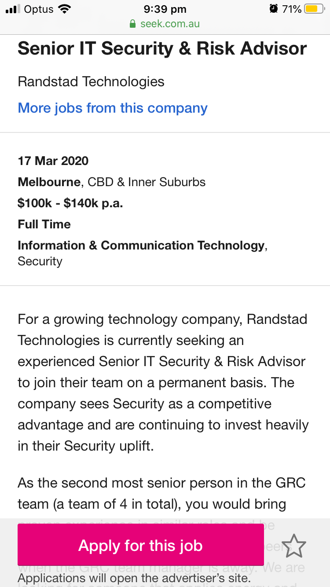
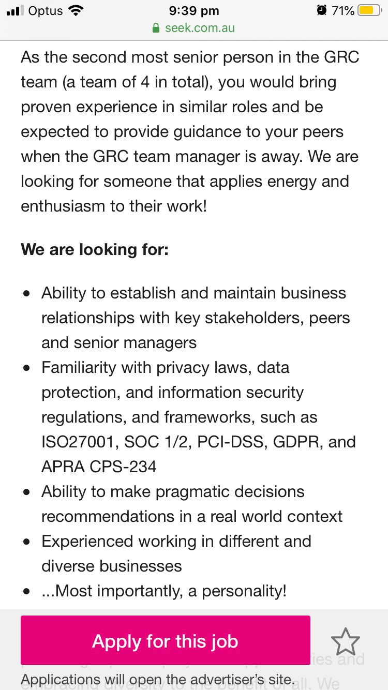

<strong>Mohamed Abdirashid Ali//</strong>
<strong>Email: s3450966@rmit.com.au //
<strong>Student no:s3450966 //</strong>

<!DOCTYPE html>
<html>
<body style="background-color:powderblue;">
<h2></h2>


</body>
</html>


<p Myers Brigg Personality Result</p>
<p style="font-family:courier;">Personality Test</p>
<p style="font-family:courier;">https://www.16personalities.com/enfj-strengths-and-weaknesses</p>
<body>

<h2></h2>


</body>
</html>

<h2></h2>

</body>

<p style="font-family:courier;">Argument Style Test</p>
<p style="font-family:courier;">https://psychologytoday.tests.psychtests.com/bin/transfer</p>
<!DOCTYPE html>
<html>
<body>

<h2></h2>


</body>
</html>

<h2></h2>

</body>
<p style="font-family:courier;">Learning Style Test</p>
p style="font-family:courier;">http://www.whatismylearningstyle.com/learning-style-test-1.html</p>

<!DOCTYPE html>
<html>
<body>

<h2></h2>


</body>
</html>

<h2></h2>


<p style="font-family:courier;">I am passionate about protecting individuals from threats online. This passion comes from working as a security supervisor for the past six years. In the time of doing security line of work exposure to various access control systems such as Gallagher, monitoring systems, alarm panels and various basic computer programs was common. In the security industry Implementing risk assessment and dealing with risk management is part of the everyday role. .</p>
<p style="font-family:courier;">The interest of going from a security officer to IT steamed from a conversation between a colleague and myself. We would have several conversations based on the various fields of IT from big data to cyber security.  The branch of IT that resonated with me during those conversations and after much extensive research was cyber security as it was comparable to what I have been doing for the past six years.  The idea of doing what I do right now on a greater scale excites me.  This led me to enroll in to RMIT university to study Information technology. .</p>
<p style="font-family:courier;">RMIT university is a reputable university with a high volume of graduate employment. RMIT also provides students with flexible options to study via OUA (Open University Australia). This allows freedom to be able to carry out daily responsibilities such as work and paying bills while being able to get an education.</p>
<p style="font-family:courier;">In the search for knowledge I would expect to know more about the IT world and how preventative methods used to inhibit criminal offenses on a cyber level.  I would expect to learn the necessary functions to carry out such tasks required by someone in the cyber field of IT as I progress throughout the years.</p>
<p style="font-family:courier;">I find that an ideal job within IT would be in the cyber security sector. An illustration of what that looks like depicted in the image below. It is a sector with job security with so many openings within and it provides a challenge to keep the mind stimulated and has rewarding remunerations. </p>
<!DOCTYPE html>
<html>
<body>

<h2></h2>



</body>
</html>

<h2></h2>

</body>

<h2 style="font-family:verdana;">What is the purpose of todays project?</h1>
<p style="font-family:courier;">The purpose of this document is to introduce the X51Anti-virus software system to tackle cyber security threats like phishing.</p>


<h2 style="font-family:verdana;">What is Phishing?</h1>
<p style="font-family:courier;">Phishing is a popular method that hackers use to infiltrate or induce individuals to reveal their personal information e.g.  credit card numbers, legal document details (passport, driver license) and passwords.</p>

<h2 style="font-family:verdana;">Why is it important to tackle cyber threats?</h1>
<p style="font-family:courier;">A recent study by Sarah HospelHorn updated on 10/5/2018 of events that changed cyber security. .</p>
<p style="font-family:courier;">-In 1976-2006 an individual by the name of Greg chung of Boeing stole 2 billion dollars over a period of 30years. .</p>
<p style="font-family:courier;">-In 2013- 2014 Yahoo hackers breached 3 billion user accounts. Yahoo were penalized 35million by the SEC for failure to disclose breach in timely manner. </p>
<p style="font-family:courier;">-In 2015 4.2 million personnel files stolen of former and current government employees.</p>
<p style="font-family:courier;">-In 2017 143 million Americans data compromised in a breach. The hacker gained access to 209,000 consumer credit cards. </p>
<p style="font-family:courier;">-Preventative methods first introduced in early 1970s when Bob Thomas made a self-replicating program to infect DEC PDP-10. It gave birth to the creation of the first anti-virus ..</p>


<h2 style="font-family:verdana;">Here are three components to a phishing attack:</h1>
<p style="font-family:courier;">1.The incident is carried out through electronic networks used every day such as email or phone calls.</p>
<p style="font-family:courier;">2.The hacker is pretentious and tries to be someone he/she is not by luring you in through emotional appeal, earning your trust. .</p>
<p style="font-family:courier;">3.Essentially the aim of the individual is gain personal information, such as login or credit card numbers.</p>
<p style="font-family:courier;">(Ivan Belcic on February 5, 2020)</p>


<h2 style="font-family:verdana;">Why is the X51Anti-virus software suitable to ward of cyber threats?</h1>
<p style="font-family:courier;">Hackers have become more innovative in their ways to hack information. Subsequentially over the years cyber security professionals have also evolved and become better at detecting threats. </p>
<p style="font-family:courier;">One of the most common ways hackers use to gain user information is through phishing as pointed out earlier and written in a research piece by Will YakowiczStaff writer, Inc</p>
<p style="font-family:courier;">This method has been common amongst hackers for a long time. The software X51Anti-virus is a preventative method to safeguard personal information. The emotional or deceptive tactics used by hackers reduces as the X51Anti-virus software filters out potential dangers that are trying to access user is personal information and essentially what the hacker cannot access he or she does not have power over. The software ensures the users information is safe from hackers through securing the user domain and filtering out any blacklisted websites. </p>


<h2 style="font-family:verdana;">Features of the X51Anti-virus system?</h1>
<p style="font-family:courier;">-Anti-virus software removes all spyware, adware, and malware viruses. </p>
<p style="font-family:courier;">- Detects look alike domains and filters them</p>
<p style="font-family:courier;">- Learns from former hackers and focus on blacklisting </p>
<p style="font-family:courier;">throughly tested anti-virus software since June 20th, 2019</p>

<h2 style="font-family:verdana;">Conclusion</h1>
<p style="font-family:courier;">Hackers that gain access to government information ,bank details or popular internet platforms, such as Yahoo, eBay, Facebook who have millions of users are exposed and their personal information could be used for malicious purposes such as identity theft. .</p>
<p style="font-family:courier;">The hacker gaining credit card information can steal hard earned money setting the victim back financially or sell personal information to others for monetary gains. Unfortunately, in the event of a cyber-attack there is no real way of knowing what the hackers intentions may be and how far they are willing to take data that they have been able to hack. </p>
<p style="font-family:courier;">That is why preventative methods are essential to ensure the user is safe and secure. As cyber security is advancing toward solutions one common method used by hackers that remains is phishing. The X51Anti-virus software system developed is a preventative tool for users to safeguard their personal information from potential phishing threats. </p>


<p style="font-family:courier;">Updated on 20th March 2020</p>
